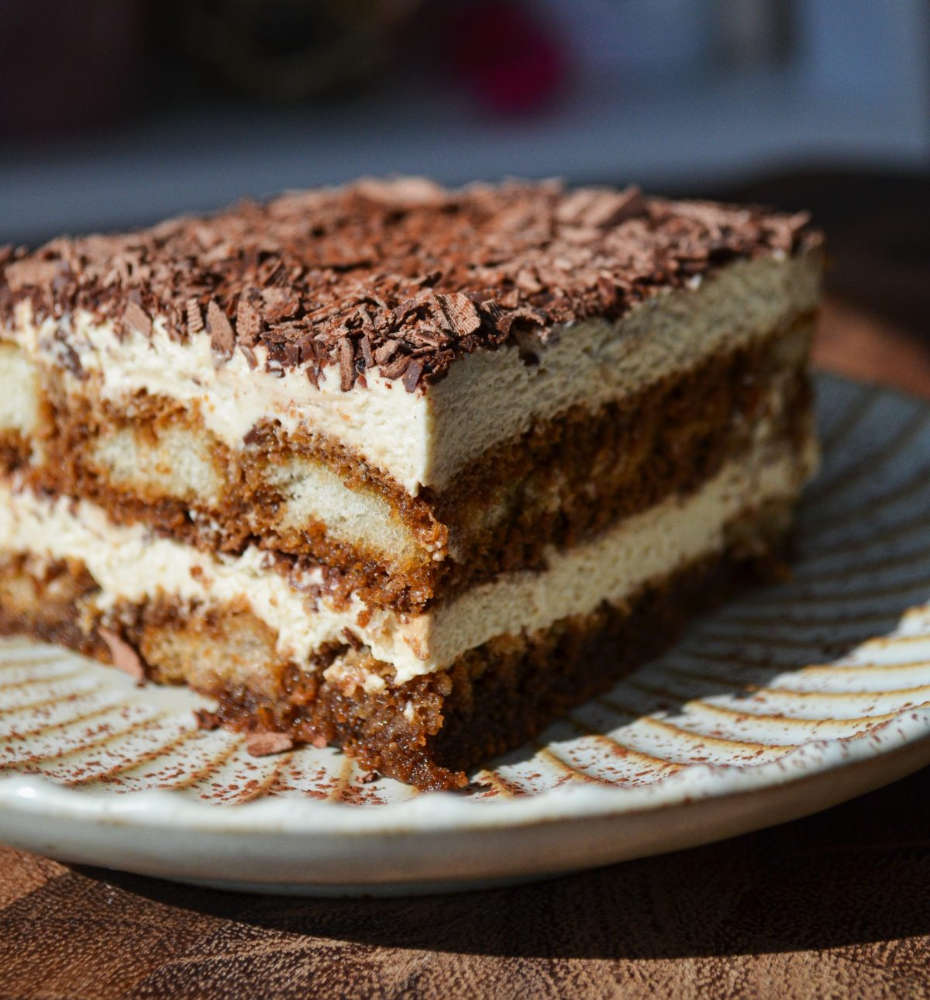

Home
Easy Tiramisu Recipe

Description
This is a quick and easy tiramisu recipe that a good friend's mother was kind enough to share with me. Don't tell her I'm sharing it here!
Ingredients
Filling
- 6 egg yolks
- 1 1/4 cups white sugar
- 1 1/4 cups mascarpone cheese
- 1 3/4 cups heavy whipping cream
- 2 (3 ounce) packages of ladyfingers (approximately 24 ladyfingers total)
- 1/3 cup Kahlua (or coffee / substitution of your choice)
Toppings
- 1 teaspoon unsweetened cocoa powder
- 1 (1 ounce) square semisweet chocolate (shaved)
Steps
Before you begin, chill the mixing bowl you'll be whipping the cream in.
- Bring water to a boil in the bottom pot of a double boiler. Keep the top pot off of the boiler for now.
- Combine egg yolks and sugar in the top pot of the double boiler.
- Once combined, add top pot with egg and sugar mixture to the bottom pot and reduce heat to low.
- Stirring constantly, cook the mixture for about 10 minutes.
- After 10 minutes, remove the mixture from the heat and whip in the yolks until the mixture is thick.
- Add the mascarpone cheese to the whipped yolks and beat until combined.
- Pull your chilled bowl out of the refrigerator and whip the cream until stiff peaks are formed.
- Gently fold the whipped cream into the mixture and set aside.
- Line bottom and sides of your serving dish with lady fingers.
- Brush the lady fingers in Kahlua or your substition.
- Spoon half of the cream filling over the lady fingers.
- Now repeat adding lady fingers, brushing with Kahlua, and covering with filling until you run out of lady fingers or reach the top of your dish.
- Cover the top layer of filling with cocoa and chocolate shavings.
- Now cover your tiramisu and refrigerate for several hours. Preferably, refrigerate overnight.
That's it! Now you're ready to serve your homemade tiramisu.